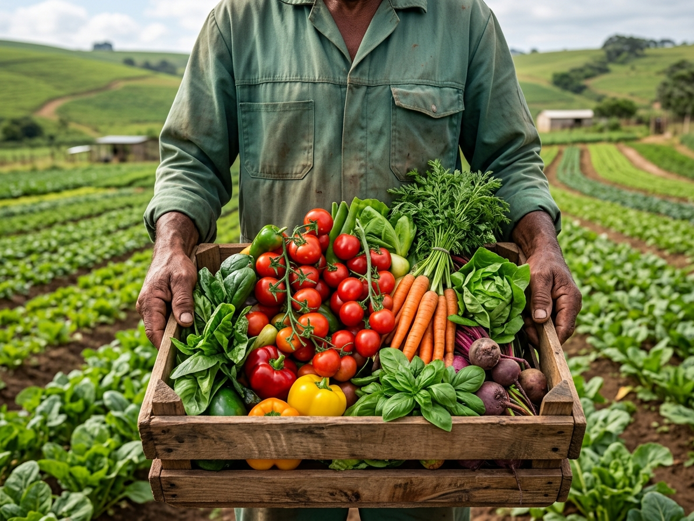

OUR STORY & MISSION
Growing Gcilima,
Feeding the South Coast
maSmanga Market Place was born right here in the rural heart of Gcilima Margate,
We bridge the gap between hardworking local farmers and the thriving local hospitality businesses
like hotels,restuarents and pubs. Our platform helps local farmers reach bigger markets and food
businesses source freshest produce
